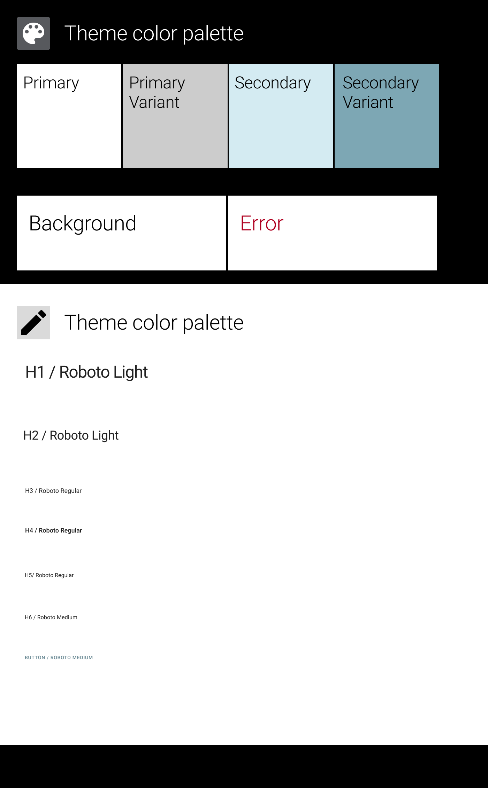
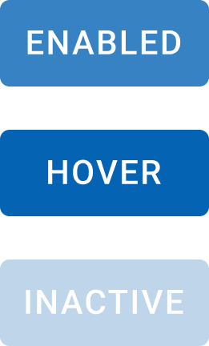
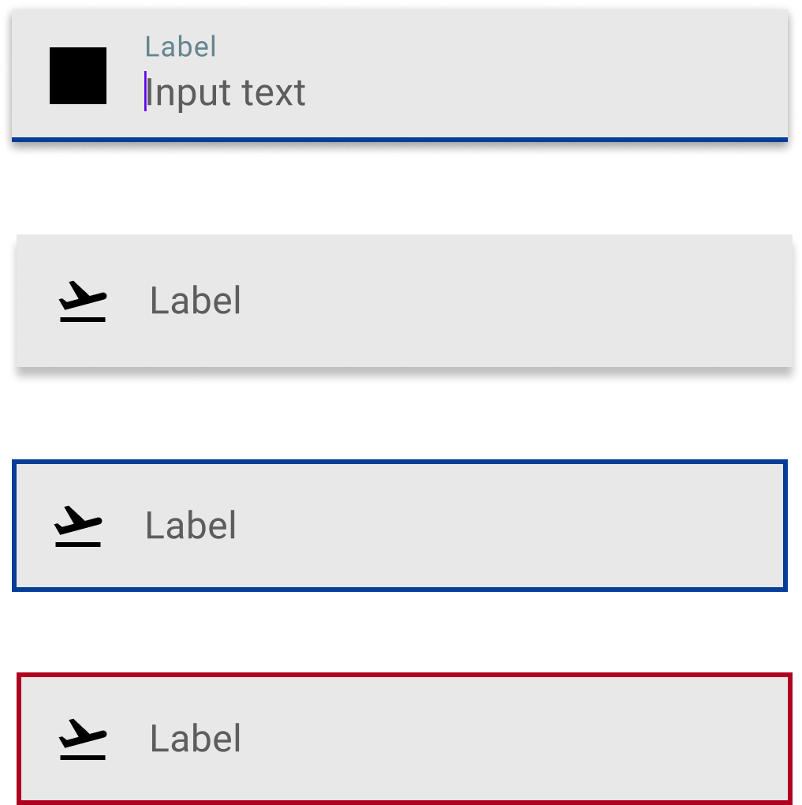
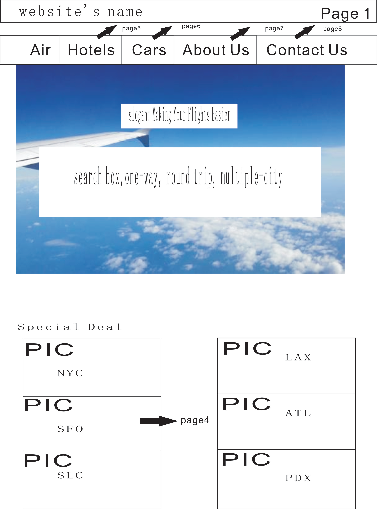
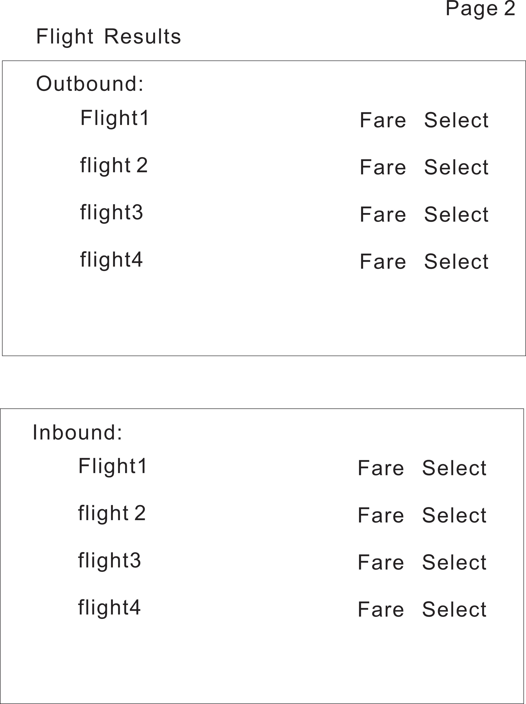
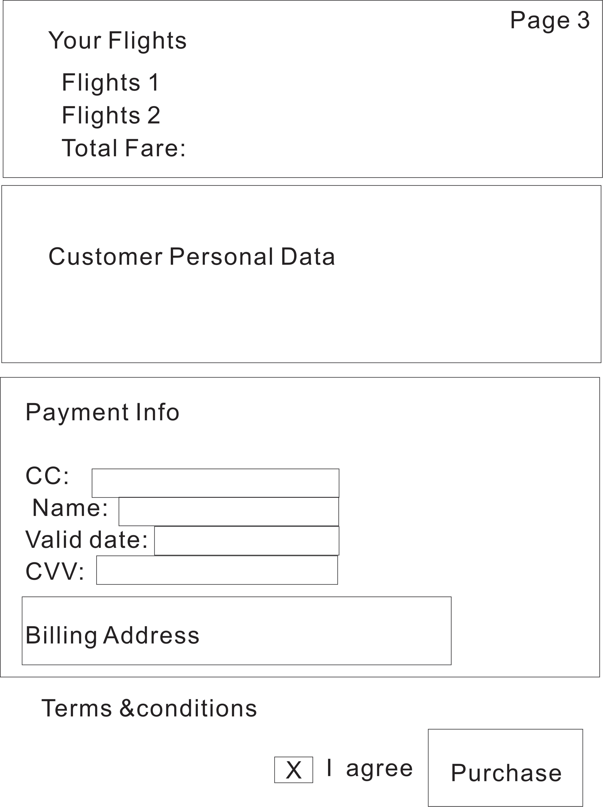
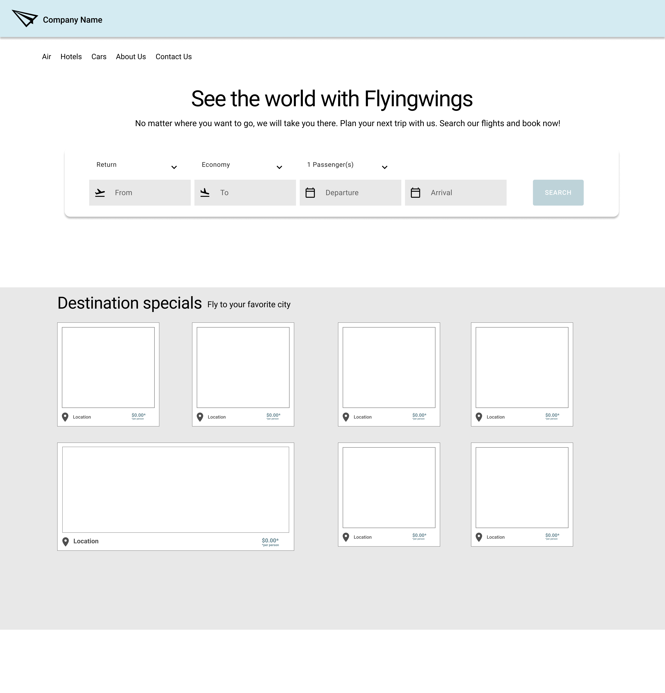
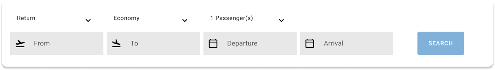
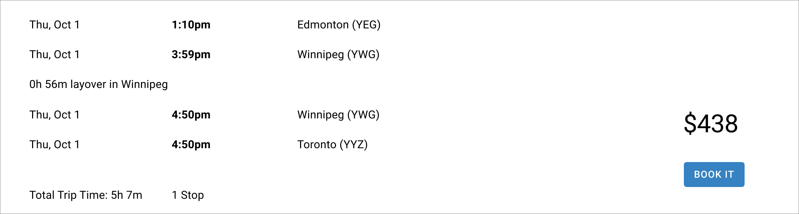
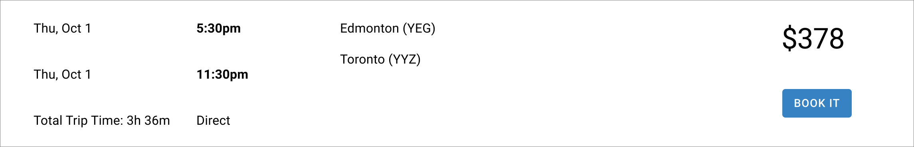

Designing a complete end-to-end flight booking experience and the underlying design system
so it could be rebranded and reused for multiple airline and travel partners.
Overview
Flying Wings is a white-label flight booking experience created for a client based in China,
through a Canadian partner in the airline industry. They provided a high-level sitemap and
needed a desktop booking flow that could be branded for their client and reused for future
airline partners.
Unlike some of my inherited projects, Flying Wings was a rare opportunity to build the
system from the ground up. I designed the end-to-end booking journey
and created a reusable design system – a UI and interaction foundation that makes it
fast to re-skin, extend, and scale the product for new clients.
The Challenge
The team needed a booking flow that served two audiences at once:
Travelers who expect a familiar, trustworthy booking experience.
Sales teams who need a polished, clickable demo for potential clients.
We started with only a basic sitemap. From there, the challenge was to turn that into:
A complete search → results → checkout → confirmation journey.
A visual system that could be rebranded for future partners without starting over.
One source of truth for components, forms, and layout patterns.
The biggest opportunity – and the piece I’m most proud of – was establishing a
design system that made the experience both consistent and highly reusable.
Project Goals
Create an end-to-end booking flow from homepage to confirmation.
Design a non-branded base and a fully branded version for Flying Wings.
Build a reusable design system (colors, type, components, patterns).
Use booking patterns that feel familiar to modern travel users.
Deliver a clickable Figma prototype for demos and development handoff.
Design System Foundations
Because Flying Wings needed to scale across multiple airline partners, I built a full
white-label design system from scratch. The system defined color, typography, components,
and interaction states so future brands could be launched quickly without redesigning the
experience each time.

White-label base theme: core colors, background and error states, and typography scale
used as the foundation for all variants.
Core UI Components

Button system: clear hierarchy for primary and secondary actions.

Text fields: resting, focus and error states with icon support.
Iconography: optimized for small sizes in dense layouts.
Process
Client Draft Screens

Draft homepage and global navigation: Air, Hotels, Cars, About Us, Contact Us.

Early flight results layout with separate outbound and inbound lists and basic fare selection.

Draft checkout concept: flight summary, passenger details, payment info, and agreement to terms.
3. Non-Branded High-Fidelity Prototype
With the layout validated, I moved into a non-branded high-fidelity prototype using the
design system foundations. This version established:
Typography and color usage across the interface.
Form styles and field groupings for search and checkout.
Card layouts for destination specials and supporting content.
Consistent header, footer, and navigation patterns.

High-fidelity base experience, ready to be themed for different clients.
4. Branded High-Fidelity Prototype
Using the same components, I then applied the Flying Wings brand:
Custom color palette and typography choices.
Updated hero imagery and destination visuals.
Refined marketing copy for the homepage and specials.
Applying brand styling on top of the same reusable component library.
5. Search, Results & Selection Flow
The core booking flow needed to be easy to scan and compare. The results layout included:
Separate outbound and inbound flight lists with pricing.
Trip duration, layovers, and “Direct” indicators.
Clear states: “Select”, “Book it”, and “Booked”.
Consistent rows for all options to support quick comparison.

Search form: trip type, cabin, passengers, and date fields using consistent input patterns.

Multi-stop result: outbound leg with layover and total trip time surfaced clearly.

Direct result: simple row with clear price and primary “Book it” action.
6. Trip Summary & Checkout
After flight selection, users see a combined trip summary and price breakdown, followed by
passenger and billing forms. The design system ensured:
Consistent typography and spacing across all form sections.
Clear hierarchy between outbound, inbound, and price details.
Standardized input styles for all passenger and billing fields.
Visible terms and conditions to build trust near the final action.
Trip summary and passenger details screen
Checkout screen built entirely from reusable components in the design system.
7. Interactive Prototype
To support remote reviews and client demos, I created a fully hot-spotted prototype in
Figma. Stakeholders could click through:
Homepage → Search → Results
Flight selection and trip summary
Checkout and confirmation
The prototype is used in beta for internal and client-facing presentations.
Figma prototype overview of the booking flow
Interactive prototype connecting all steps of the white-label booking journey.
The final deliverable included both a non-branded white-label base and a Flying Wings
branded experience, all powered by the same design system. The client approved the design,
and it was handed off to the development team as a structured, reusable UI kit.
Delivered a complete end-to-end booking journey in a clickable prototype.
Created a scalable design system to support future white-label clients.
Provided a polished demo flow for sales and stakeholder presentations.
Established clear patterns for search, results, selection, and checkout.
What I’d Do Next
Add mobile and tablet variants using the same design system foundations.
Layer in analytics to understand drop-off points in the booking flow.
Explore features such as fare alerts, saved trips, and loyalty integration.
Formalize the system into a full design system site or documentation hub.